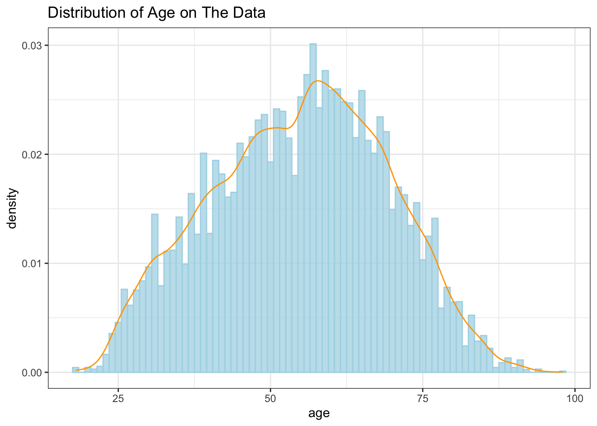
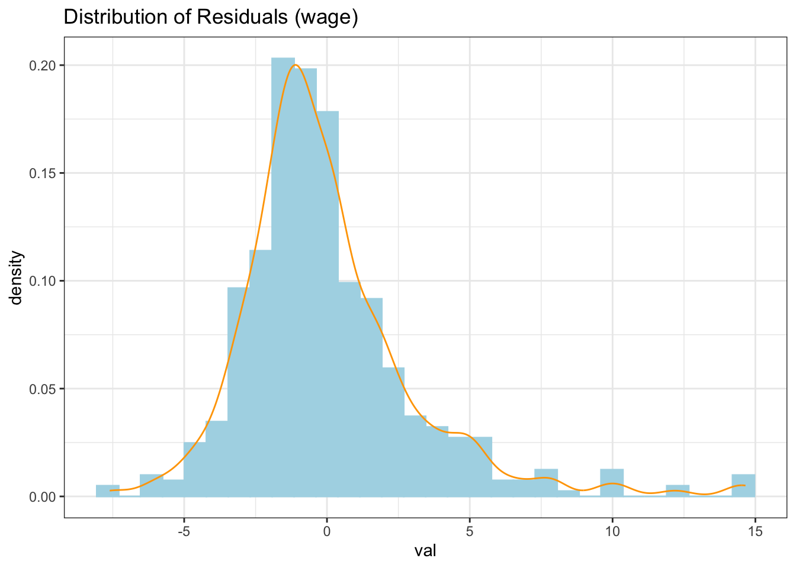
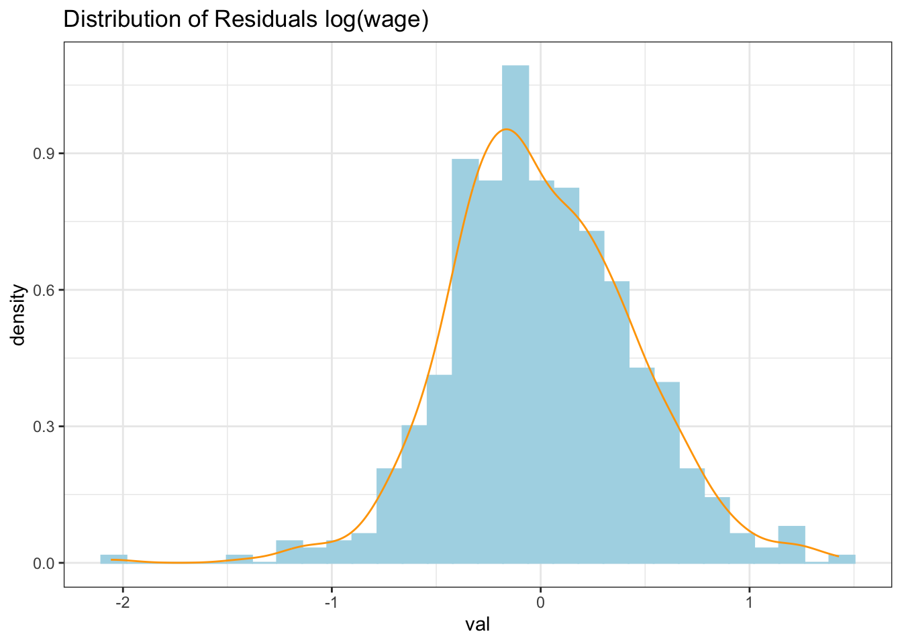

library(wooldridge)
library(tidyverse)
library(stargazer)
softdrink_data <- get(load("softdrink.RData"))assignment6
Problem 6.1: Obesity rates
Data from OECD shows that the rate of obesity in Denmark reached \(13.5\%\) in 2010. This corresponds to an increase of approximately \(18\%\) compared to 2005 and a \(150\%\) rise since 1987. This places Denmark below the average level in OECD countries but above the level for comparable countries like Sweden and Norway. The rise in obesity seems to be larger among younger and less educated individuals.
Even though obesity, to a large extent, is thought to be the outcome of an individual decision process, politicians must also consider the impact of these private decisions on society. Extreme obesity is correlated with many lifestyle-related illnesses, and it, therefore, poses a large burden on healthcare systems. More importantly, it impacts society in countries with publicly financed healthcare systems (like Denmark) since obese individuals pay the same to the healthcare system as non-obese individuals that do not have the same healthcare needs. Politicians, therefore, have a direct interest in reducing obesity. Several lifestyle factors seem to have contributed to the obesity epidemic during the last decades: The price of food, especially unhealthy foods, has declined, the amount of sedentary work has increased, and the use of electrical equipment and private cars has expanded.
The political system is searching for ways to reduce the problem. One way to do this is to consider using economic instruments to change people’s lifestyles and reduce, e.g., the consumption of unhealthy foods like soft drinks. The increasing consumption of soft drinks is an essential cause of the increased prevalence of obesity. In this assignment, you will investigate the lifestyle behavior of different household groups regarding soft drink consumption and the potential for politicians to change this behavior by imposing economic (tax) instruments.
Data description
The data set is called softdrink.RData and is available here. It is a subset of a larger data set from the research company GfK ConsumerTracking Scandinavia which covers approximately 2500 consumers that, every week, report their purchase of everyday staples like food for in-house consumption. The respondents select themselves into the panel. The purchases are registered by the household member who is mainly responsible for shopping. The data set covers aggregate food and soft drink expenditures in 2004. The data set also includes household characteristics aggregated into monthly observations. That is, each observation of purchases is from a select week. The data set contains the following variables:
| Variable | Description |
|---|---|
volpers |
volume of soda per person in household |
soft |
\(=1\) if soda has been bought in a given month, 0 otherwise |
price |
average price paid for soda in a month |
totfoodpers |
total food expenditure per person |
age |
age in years for the primary shopper |
single |
\(=1\) if the household consists of a single adult, 0 otherwise |
capital |
\(=1\) if households lives in capital area, 0 otherwise |
urban |
\(=1\) if households lives in urban area, 0 otherwise |
rural |
\(=1\) if households lives in rural area, 0 otherwise |
high_edu |
\(=1\) if primary shopper has a higher education, 0 otherwise |
kid06 |
\(=1\) if there are kids between 0 and 6, 0 otherwise |
kid714 |
\(=1\) if there are kids between 7 and 14, 0 otherwise |
kid1520 |
\(=1\) if there are kids between 15 and 20, 0 otherwise |
Important
Start by loading the data set. Note that the environment is called students and not data. Therefore, I changed the name in the following code snippet:
load("softdrink.RData")
data <- studentsExercises
Please answer the following questions:
Provide a table with all the variables in the data set. What type of data are we working with? Explain.
stargazer(softdrink_data, type = "text")======================================================= Statistic N Mean St. Dev. Min Max ------------------------------------------------------- age 27,316 54.849 14.346 18 98 single 27,316 0.385 0.487 0 1 price 27,316 7.408 2.751 0.595 51.745 soft 27,316 0.508 0.500 0 1 capital 27,316 0.242 0.428 0 1 urban 27,316 0.432 0.495 0 1 rural 27,316 0.325 0.468 0 1 high_edu 27,316 0.215 0.411 0 1 volpers 27,316 0.283 0.558 0.000 16.733 kid06 27,316 0.081 0.273 0 1 kid714 27,316 0.130 0.336 0 1 kid1520 27,316 0.119 0.323 0 1 totfoodpers 27,316 1,042.267 838.306 16.000 13,097.200 -------------------------------------------------------We have a data which contains non-experimental data. This data consists of dummy variables(soft, single, capita, urban, rural, high_edu, kid06, kid714, kid1520) and numerical variables(volpers, price, totfoodpers, age).
What do you think are the main sources of errors in this type of data in relation to soft drink consumption? For instance, what problems may arise as a result of self-selection? Discuss.
The first error that I noticed is the way the data was collected. The data was self-selected which might be introduces exogenous variables due to not randomly selected samples.
In addition, the data was counted based on the selected member of household. This still have a leak if the members of the household didn’t report completely about their purchase e.g. when a member bought soda at work.
Aside that, it seems that the volume of consumption is the average of each household which seems that can be redundant e.g. if a household consists of two adults and one child where the child is only the consumer of soda, per person may be not to large by if it is per person, the child consumption will be large.Draw and present a histogram of the age distribution for the main shopping responsible. Do you think it is representative of the Danish population?
ggplot(data = softdrink_data, mapping = aes(x = age)) + geom_histogram(mapping = aes(y = ..density..), fill = "lightblue", color = "lightblue", alpha = 0.75, binwidth = 1) + geom_density(color = "orange") + labs(title = "Distribution of Age on The Data") + theme_bw()Warning: The dot-dot notation (`..density..`) was deprecated in ggplot2 3.4.0. ℹ Please use `after_stat(density)` instead.
From the data above we can see that the majority of the responded on the data is in the range of 57 years old. This not reflects the reality of the age distribution of Denmark population since it has to be flat. It might be the selection bias of this study.
Calculate the mean consumption for singles with \(age<35\), singles between 35 and 50, singles between 50 and 70, and singles above 70, and the same for couples (in total, eight different conditional sample means).
softdrink_data <- softdrink_data |> mutate(categ = case_when( age<35 & single==1 ~ "single_under_35", age>35 & age <50 & single==1 ~ "single_b/w_35_50", age>50 & age <70 & single==1 ~ "single_b/w_50_70", age>70 & single==1 ~ "single_above_70", age<35 & single==0 ~ "married_under_35", age>35 & age <50 & single==0 ~ "married_b/w_35_50", age>50 & age <70 & single==0 ~ "married_b/w_50_70", age>70 & single==0 ~ "married_above_70", )) softdrink_data |> group_by(categ) |> summarise(mean_consumption = mean(volpers)) |> ungroup() |> arrange(desc(mean_consumption))# A tibble: 9 × 2 categ mean_consumption <chr> <dbl> 1 single_under_35 0.382 2 <NA> 0.369 3 single_b/w_35_50 0.344 4 married_under_35 0.306 5 single_b/w_50_70 0.298 6 married_b/w_35_50 0.288 7 married_b/w_50_70 0.269 8 married_above_70 0.201 9 single_above_70 0.197From the result obove, we can see that the younger group, which is under 35, for single and married are on the first and third respectively.
Who are the largest consumers of soft drinks? Is this what you expected?
single and under under 35, is the largest consumer of soft drinkk. This might indicate that the consumption of soda on the younger age is relatively bigger than the other age groups as stated on the introduction. However, we have to be careful with the above result since the non-single groups might be underestimate due to averaged consumption.
Calculate the frequency of zero purchases of soft drinks in each of the eight groups and comment on the results in relation to question 3. (Remember that the variable
softis a dummy indicating whether the household purchased soft drinks or not in a given month).softdrink_data |> filter(soft==0) |> group_by(categ) |> summarise(n = n()) |> mutate(freq = round((n/sum(n)),3)) |> arrange(desc(freq))# A tibble: 9 × 3 categ n freq <chr> <int> <dbl> 1 married_b/w_50_70 3933 0.292 2 single_b/w_50_70 2511 0.187 3 married_b/w_35_50 1886 0.14 4 single_above_70 1394 0.104 5 single_b/w_35_50 1115 0.083 6 married_above_70 823 0.061 7 married_under_35 816 0.061 8 <NA> 576 0.043 9 single_under_35 395 0.029As expected, the three biggest non soda consumer groups are the older groups (in this case, people between 50-70). However, I expected that the two biggest are the groups above 70 instead of those 50-70 groups. This might be due to bias on the data collection which resulted on bias self-report from the older groups especially people who were above 70 years old.
Now remove all observations that have not purchased any soda. As we assume that the consumption of soft drinks in liters per person is to some extent determined by the price, the age and education of the household member who is mainly responsible for shopping, how much the household spends on food per person, the number of kids in the household, urbanity, and single status, we assume the following model for the population: \[\begin{align} \log(volpers)&=\beta_0 + \beta_1\log(price) + \beta_2age + \beta_3 age^2 + \beta_4 kid06 + \beta_5 kid714 \\ &+ \beta_6 kid1520 + \beta_7capital + \beta_8 urban + \beta_9 single + \beta_{10} \log(totfoodpers) + u. \end{align}\] Estimate the model and report your results in equation form, with corresponding standard errors, the number of observations, and \(R^2\).
softdrink_model1 <- lm(data = softdrink_data |> filter(soft>0), formula = log(volpers) ~ log(price) + age + I(age^2) + kid06 + kid714 + kid1520 + capital + urban + single + log(totfoodpers) ) summary_softdrink_model1 <- summary(softdrink_model1) stargazer(softdrink_model1, type = "text")=============================================== Dependent variable: --------------------------- log(volpers) ----------------------------------------------- log(price) -0.842*** (0.018) age 0.046*** (0.004) I(age2) -0.0005*** (0.00004) kid06 -0.231*** (0.033) kid714 -0.280*** (0.025) kid1520 -0.165*** (0.025) capital -0.027 (0.022) urban -0.072*** (0.019) single 0.154*** (0.018) log(totfoodpers) 0.458*** (0.014) Constant -3.599*** (0.158) ----------------------------------------------- Observations 13,867 R2 0.211 Adjusted R2 0.210 Residual Std. Error 0.953 (df = 13856) F Statistic 369.726*** (df = 10; 13856) =============================================== Note: *p<0.1; **p<0.05; ***p<0.01We can see from our estimation that all of the estimated marginal effect are significant even on 1% significance level except the capital. This indicates that whether someone is living at capital or not does not determine the consomption of soda.
Which assumptions do we need to invoke to ensure the unbiasedness of our OLS estimates? Explain.
The unbiasedness of OLS can be assured if we obey MLR.1 - MLR.4 which are linear model of population, random sampling, conditional zero mean and conditional zero mean. In addition, if the sample is large we can have weaker MLR.4 that states we only need cov(x,u) = 0. However, those four do not guarantee that our estimates are efficent.
Which assumptions need to hold in order to carry out standard inference (\(t\)-tests and \(F\)-tests)? Why?
MLR.6 should be obeyed which tells us that the residual has to be normally distributed. However, this restriction can be replace by the CLT (Central Limit Theory) which state that in infinity number of samples, the distribution of u will be normally distributed.
Do these assumptions seem reasonable in our model? Reflect on your answer.
MLR.1: reasonable since our population model is linear
MLR.2: Not reasonable because the self-selection colledted data introduces not random sample.
MRL.3: rewe can check by computing the correlation matrix:(inputnames <- intersect(names(softdrink_data), names(softdrink_model1$coefficients)))[1] "age" "single" "capital" "urban" "kid06" "kid714" "kid1520"cor(subset(softdrink_data,select=inputnames))age single capital urban kid06 age 1.00000000 0.13997919 0.04151441 -0.045070176 -0.388919911 single 0.13997919 1.00000000 0.20486210 -0.026751135 -0.171802208 capital 0.04151441 0.20486210 1.00000000 -0.493644973 -0.086450515 urban -0.04507018 -0.02675114 -0.49364497 1.000000000 -0.001446513 kid06 -0.38891991 -0.17180221 -0.08645052 -0.001446513 1.000000000 kid714 -0.32950030 -0.13130048 -0.08328128 -0.002648214 0.258421957 kid1520 -0.18979227 -0.11755330 -0.05842176 0.036758283 -0.033821310 kid714 kid1520 age -0.329500305 -0.18979227 single -0.131300477 -0.11755330 capital -0.083281278 -0.05842176 urban -0.002648214 0.03675828 kid06 0.258421957 -0.03382131 kid714 1.000000000 0.25335471 kid1520 0.253354709 1.00000000from the result above, it seems we don’t have any perfect collinearity between vairables which makes MLR.3 valid.
MLR.4: We are not sure for it since it is really hard to make sure that we include all of the factors so that the population error model is zero given our samples.
MLR.5-6: We need to investigate further from our result
Problem 6.2
Use the data in wage1 for this exercise.
Estimate the equation: \[\begin{align} wage = \beta_0 + \beta_1 educ + \beta_2 exper + \beta_3 tenure + u \end{align}\] Save the residuals and plot a histogram of them.
wage_data <- wage1 wage_model1 <- lm(data = wage_data, formula = wage ~ educ + exper + tenure) stargazer(wage_model1, type = "text")=============================================== Dependent variable: --------------------------- wage ----------------------------------------------- educ 0.599*** (0.051) exper 0.022* (0.012) tenure 0.169*** (0.022) Constant -2.873*** (0.729) ----------------------------------------------- Observations 526 R2 0.306 Adjusted R2 0.302 Residual Std. Error 3.084 (df = 522) F Statistic 76.873*** (df = 3; 522) =============================================== Note: *p<0.1; **p<0.05; ***p<0.01y_hat_wage = predict(wage_model1) residuals = data.frame(val = wage1$wage - y_hat_wage) ggplot(data = residuals, mapping = aes(x = val)) + geom_histogram(aes(y = ..density..), fill = "lightblue", color = "lightblue") + geom_density(color = "orange") + theme_bw() + labs(title = "Distribution of Residuals (wage)")`stat_bin()` using `bins = 30`. Pick better value with `binwidth`.
Repeat part 1, but with \(\log(wage)\) as the dependent variable.
wage_data <- wage1 wage_model2 <- lm(data = wage_data, formula = log(wage) ~ educ + exper + tenure) stargazer(wage_model2, type = "text")=============================================== Dependent variable: --------------------------- log(wage) ----------------------------------------------- educ 0.092*** (0.007) exper 0.004** (0.002) tenure 0.022*** (0.003) Constant 0.284*** (0.104) ----------------------------------------------- Observations 526 R2 0.316 Adjusted R2 0.312 Residual Std. Error 0.441 (df = 522) F Statistic 80.391*** (df = 3; 522) =============================================== Note: *p<0.1; **p<0.05; ***p<0.01y_hat_wage = predict(wage_model2) residuals = data.frame(val = log(wage1$wage) - y_hat_wage) ggplot(data = residuals, mapping = aes(x = val)) + geom_histogram(aes(y = ..density..), fill = "lightblue", color = "lightblue") + geom_density(color = "orange") + theme_bw() + labs(title = "Distribution of Residuals log(wage)")`stat_bin()` using `bins = 30`. Pick better value with `binwidth`.
As can be seen from two figures above, the log transformation of wage makes the residual distribution closer to normal distribution.
Would you say that Assumption MLR.6 is closer to being satisfied for the level-level model or the log-level model?
If we are dealing with small samples and need to rely on MLR.6, the semi-elasticity sure will help for closer MLR.6 assumption. However, if we have large enough samples (e.g., n >=1500) it is not important whether we choose the level-level or log-level model. The most important thing is how we can interpret the problem (e.g. whether we want to report it as a percentage change or not). Note: comparing visually sometimes is not enough.
Problem 6.3
Use the data in wage2 for this exercise.
Estimate the model \[\begin{align} \log(wage) &= \beta_0 + \beta_1 educ + \beta_2 exper + \beta_3 tenure + \beta_4 married \\ &+ \beta_5 black + \beta_6 south + \beta_7 urban + u, \end{align}\] and report the results in the usual form. Holding other factors fixed, what is the approximate difference in monthly salary between blacks and nonblacks? Is this difference statistically significant?
wage2_data <- wage2 wage2_model <- lm(data = wage2_data, formula = log(wage) ~ educ + exper + tenure + married + black + south + urban) stargazer(wage2_model, type = "text")=============================================== Dependent variable: --------------------------- log(wage) ----------------------------------------------- educ 0.065*** (0.006) exper 0.014*** (0.003) tenure 0.012*** (0.002) married 0.199*** (0.039) black -0.188*** (0.038) south -0.091*** (0.026) urban 0.184*** (0.027) Constant 5.395*** (0.113) ----------------------------------------------- Observations 935 R2 0.253 Adjusted R2 0.247 Residual Std. Error 0.365 (df = 927) F Statistic 44.747*** (df = 7; 927) =============================================== Note: *p<0.1; **p<0.05; ***p<0.01From the result above, the estimated difference salary between blacks and nonblacks is approximately -18.8% which is statistically significance even in 99% confidence interval. However, for precise effect:
exact_beta_hat_black = 100*(exp(wage2_model$coefficients[6])-1) paste0("Exact beta_hat_black: ", round(exact_beta_hat_black,2), "%")[1] "Exact beta_hat_black: -17.17%"Add the variables \(exper^2\) and \(tenure^2\) to the equation and show that they are jointly insignificant at even the \(20\%\) level.
To do this we we will create an unrestricted population model. Then we compare the joint distribution of the two variables.
wage2_model2 <- lm(data = wage2_data, formula = log(wage) ~ educ + exper + I(exper^2) + tenure + I(tenure^2) + married + black + south + urban) anova(wage2_model, wage2_model2)Analysis of Variance Table Model 1: log(wage) ~ educ + exper + tenure + married + black + south + urban Model 2: log(wage) ~ educ + exper + I(exper^2) + tenure + I(tenure^2) + married + black + south + urban Res.Df RSS Df Sum of Sq F Pr(>F) 1 927 123.82 2 925 123.42 2 0.39756 1.4898 0.226From the above restricted F-test, we can see that the p-value is 22.6% which is not statistically significance even at 20% level. Hence, we can not reject our null hypothesis which states that the two additional marginal effects of \(exper^2\) and \(tenure^2\) are zero.
Extend the original model to allow the return to education to depend on race and test whether the return to education does depend on race.
wage2_model3 <- lm(data = wage2_data, formula = log(wage) ~ educ*black + exper + tenure + married + south + urban) stargazer(wage2_model, wage2_model2, wage2_model3, type = "text")=========================================================================================== Dependent variable: ----------------------------------------------------------------------- log(wage) (1) (2) (3) ------------------------------------------------------------------------------------------- educ 0.065*** 0.064*** 0.067*** (0.006) (0.006) (0.006) exper 0.014*** 0.017 0.014*** (0.003) (0.013) (0.003) I(exper2) -0.0001 (0.001) tenure 0.012*** 0.025*** 0.012*** (0.002) (0.008) (0.002) I(tenure2) -0.001* (0.0005) married 0.199*** 0.199*** 0.199*** (0.039) (0.039) (0.039) black -0.188*** -0.191*** 0.095 (0.038) (0.038) (0.255) south -0.091*** -0.091*** -0.089*** (0.026) (0.026) (0.026) urban 0.184*** 0.185*** 0.184*** (0.027) (0.027) (0.027) educ:black -0.023 (0.020) Constant 5.395*** 5.359*** 5.375*** (0.113) (0.126) (0.115) ------------------------------------------------------------------------------------------- Observations 935 935 935 R2 0.253 0.255 0.254 Adjusted R2 0.247 0.248 0.247 Residual Std. Error 0.365 (df = 927) 0.365 (df = 925) 0.365 (df = 926) F Statistic 44.747*** (df = 7; 927) 35.171*** (df = 9; 925) 39.322*** (df = 8; 926) =========================================================================================== Note: *p<0.1; **p<0.05; ***p<0.01From the result above, the interaction coefficient between educ and black is not statistically significant even at 10% level. This means that we can confidently say that there is no interaction between black and education variables and we can exclude it from our model.
Problem 6.4
Use the data in kielmc, only for the year 1981, to answer the following questions. The data are for houses that sold during 1981 in North Andover, Massachusetts; 1981 was the year construction began on a local garbage incinerator.
To study the effects of the incinerator location on housing price, consider the simple regression model \[\begin{align} \log(price) = \beta_0 + \beta_1 \log(dist) + u, \end{align}\] where \(price\) is the housing price in dollars and \(dist\) is distance from the house to the incinerator measured in feet. Interpreting the equation causally, what sign do you expect for \(\beta_1\), if the presence of the incinerator depresses housing prices? Estimate this equation and interpret the results
I expect that the sign of \(\beta_{1}\) would reflect the percentage change in other direction (minus). To validate this assumption we estimate it with the above population model:
house_price_data <- kielmc house_price_model <- lm(data = house_price_data, formula = log(price) ~ log(dist)) stargazer(house_price_model, type = "text")=============================================== Dependent variable: --------------------------- log(price) ----------------------------------------------- log(dist) 0.317*** (0.048) Constant 8.258*** (0.474) ----------------------------------------------- Observations 321 R2 0.120 Adjusted R2 0.117 Residual Std. Error 0.412 (df = 319) F Statistic 43.477*** (df = 1; 319) =============================================== Note: *p<0.1; **p<0.05; ***p<0.01Based on our estimate with the above population model, we can see that the \(\beta_{1}\) is positively associated with the house price (one percent change in distance will increase the house price by ~8.3% in 99% confidence interval) which is not what I expected. This might be due to several factors that we have not included into the population model which overestimated our assumption.
To the simple regression model in part 1, add the variables \(\log(intst)\), \(\log(area)\), \(\log(land)\), \(rooms\), \(baths\), and \(age\), where \(intst\) is distance from the home to the interstate, \(area\) is square footage of the house, \(land\) is the lot size in square feet, \(rooms\) is total number of rooms, \(baths\) is number of bathrooms, and \(age\) is the age of the house in years. Now, what do you conclude about the effects of the incinerator? Explain why 1 and 2 give conflicting results.
house_price_model2 <- lm(data = house_price_data, formula = log(price) ~ log(dist) + log(intst) + log(area) + log(land) + rooms + baths + age) stargazer(house_price_model, house_price_model2, type = "text")=================================================================== Dependent variable: ----------------------------------------------- log(price) (1) (2) ------------------------------------------------------------------- log(dist) 0.317*** 0.028 (0.048) (0.053) log(intst) -0.044 (0.042) log(area) 0.512*** (0.070) log(land) 0.078** (0.034) rooms 0.050** (0.024) baths 0.107*** (0.035) age -0.004*** (0.001) Constant 8.258*** 6.300*** (0.474) (0.596) ------------------------------------------------------------------- Observations 321 321 R2 0.120 0.593 Adjusted R2 0.117 0.583 Residual Std. Error 0.412 (df = 319) 0.283 (df = 313) F Statistic 43.477*** (df = 1; 319) 65.017*** (df = 7; 313) =================================================================== Note: *p<0.1; **p<0.05; ***p<0.01Based on the result above, we can see now that the log(dist) is not statistically significant anymore even at 1% level. This because we have explicitly control other factors that related to the quality of a house.
Add \([\log(intst)]^2\) to the model from part 2. Now what happens? What do you conclude about the importance of functional form?
house_price_model3 <- lm(data = house_price_data, formula = log(price) ~ log(dist) + log(intst) + I(log(intst)^2) + log(area) + log(land) + rooms + baths + age) stargazer(house_price_model, house_price_model2, house_price_model3, type = "text")=========================================================================================== Dependent variable: ----------------------------------------------------------------------- log(price) (1) (2) (3) ------------------------------------------------------------------------------------------- log(dist) 0.317*** 0.028 0.190*** (0.048) (0.053) (0.063) log(intst) -0.044 1.902*** (0.042) (0.431) I(log(intst)2) -0.113*** (0.025) log(area) 0.512*** 0.514*** (0.070) (0.068) log(land) 0.078** 0.107*** (0.034) (0.033) rooms 0.050** 0.049** (0.024) (0.023) baths 0.107*** 0.090*** (0.035) (0.034) age -0.004*** -0.004*** (0.001) (0.001) Constant 8.258*** 6.300*** -3.791* (0.474) (0.596) (2.296) ------------------------------------------------------------------------------------------- Observations 321 321 321 R2 0.120 0.593 0.618 Adjusted R2 0.117 0.583 0.608 Residual Std. Error 0.412 (df = 319) 0.283 (df = 313) 0.274 (df = 312) F Statistic 43.477*** (df = 1; 319) 65.017*** (df = 7; 313) 63.036*** (df = 8; 312) =========================================================================================== Note: *p<0.1; **p<0.05; ***p<0.01When we add the above variable, we can see that the log(dist) is back to be statstically significant even at 1% level. However, the effect is lower compared to the first population model. This might be due to other controlled variables that we introduce. In addition, we can also see that log(inst) and log(inst)^2 are both statistically significant which could tell us that there is an optimal interstate distance which can maximize the effect of the house price which makes sense since it can be a factor that shows us how close the house from the city center.